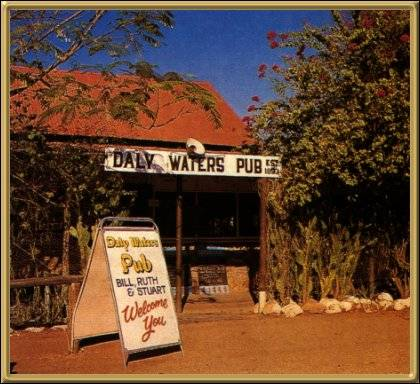

Photographer: Unknown
Further up the Stuart Highway, you'll find Daly Waters and the best place (actually I think the only place) to stop for a drink is the Daly Waters Pub, built around 1930. Daly Waters became the first international refueling stop for Qantas during World War II.